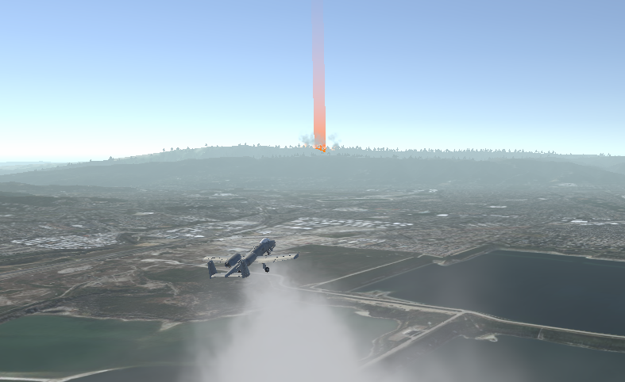
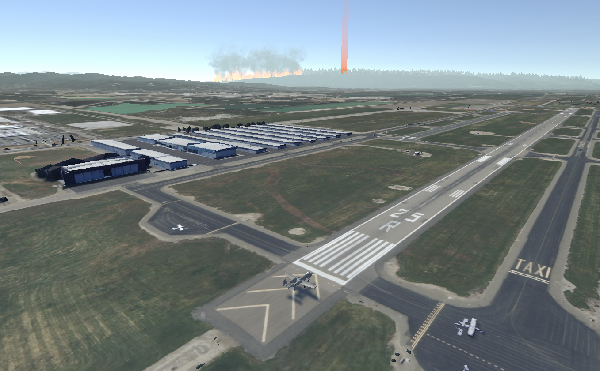

Wildfire Suppression Simulation with Realistic Jet Handling
Fly a firefighting jet across a virtual forest and suppress spreading wildfires using Phos-Chek drops
Download Here Key Features and Workflow
Choose Your Experience
This simulation is designed for versatility—use it in VR for full immersion or on a standard screen. Control the jet with a keyboard, gamepad, or HOTAS setup, and experience the mission from a customizable XR seating buck cockpit environment.
Dynamic Wildfire Logic
Wildfires are created using clusters of smaller fires scattered throughout a forest. Each fire instance has its own collider and dynamically grows in scale over time to simulate the spreading of fire across the terrain, increasing the urgency of suppression tasks.
Phos-Chek Deployment Mechanism
The firefighting jet is equipped with a Phos-Chek particle system mounted on its underside. When the user holds down a designated HOTAS button, the Phos-Chek collider is activated and deployed downward. Upon contact with active fire zones, the fires are extinguished in real time—creating a satisfying and responsive interaction loop.
Interactive Cockpit and Feedback
The simulation includes a functional cockpit with HUD elements for speed, pitch, and position tracking. Combined with onboard cameras and GPS, users gain complete situational awareness to navigate complex fire zones and execute precise aerial drops.
Problem Statement
Simulating Aerial Wildfire Suppression
The purpose of this project is to create a simulation that trains users in aerial wildfire suppression techniques by combining realistic flight controls with dynamic wildfire behavior and firefighting mechanics.
- Problem Statement
- As wildfires become more frequent and intense, there is a growing need for training tools that help users understand aerial firefighting techniques.
- Traditional flight simulators lack realistic fire behavior and suppression mechanics, limiting their usefulness in wildfire response training.
- This project addresses that gap by creating an immersive experience focused on wildfire detection, spread, and aerial response.
- Target Audience
- Students, emergency response trainees, and aviation or disaster management enthusiasts benefit from this simulation.
- It is especially useful for those exploring aircraft operation mechanics in real-world emergency scenarios.
- Core Features and Benefits
- Dynamic wildfire system that grows in scale and spreads using clustered colliders.
- Phos-Chek firefighting deployment system that interacts with wildfires in real-time upon user input.
- Intuitive control scheme supporting HOTAS, keyboard, and gamepad inputs.
- HUD and cockpit interface providing flight and target-tracking information.
- VR and non-VR compatibility for accessibility and immersion.
- Comparison with Existing Solutions
- Many flight simulators provide realistic flying mechanics, but very few simulate environmental emergencies such as wildfires.
- This project integrates interactive wildfire logic, fire-retardant deployment mechanics, and suppression feedback, offering a more specialized and hands-on experience than simulators like Microsoft Flight Simulator or X-Plane.
Input
Input in Unity is abstracted into generic actions that are read out as a data type (bool for button, float for slider, etc). This way, the code doesn't have to worry about specific devices or combinations of devices. Mapping controllers to actions is as simple as pressing a button on the controller and listening for said button.
Environment
GIS map data
We use Cesium's Bing terrain and Google 3d tiles to render the world that the user flies over. The 3d tiles are restricted to just the airport area to make it stand out more and to improve performance.
Forest data
Cesium for Unity does not support vector or point data, so for the forest where the fire is, we used an OSM extract of the area and wrote a custom xml parser to extract the relevant data and place trees in the correct areas. This was done instead of using Google's 3d data because each tree needs to ability to individually die from the fire, which is not possible with only mesh data from Google.
Plane Logic
Wildfire Interaction and Aerial Suppression
This section of the simulation focuses on simulating aerial firefighting with a plane equipped to drop Phos-Chek fire retardant on active wildfires in a forest environment.
🔥 Wildfire Behavior
- The wildfire consists of numerous small fire objects, each with colliders attached.
- To simulate natural fire spread, the fires gradually increase in scale over time.
✈️ Phos-Chek Deployment System
- A particle system simulates the Phos-Chek fire retardant.
- The particle system is mounted beneath the airplane and configured to move downward when released.
- A collider is attached to the Phos-Chek particle system to allow interaction with fire objects.
- By default, the Phos-Chek collider is disabled to avoid accidental triggering.
- When the user presses and holds a specific button on the HOTAS simulator, the collider is enabled and the retardant is deployed.
💥 Interaction Logic
- When the Phos-Chek collides with active fire objects in the forest, those fires begin to shrink and eventually disappear, simulating fire suppression.
- This provides an intuitive, skill-based mechanic where users must fly accurately and time their release correctly to suppress the fire effectively.